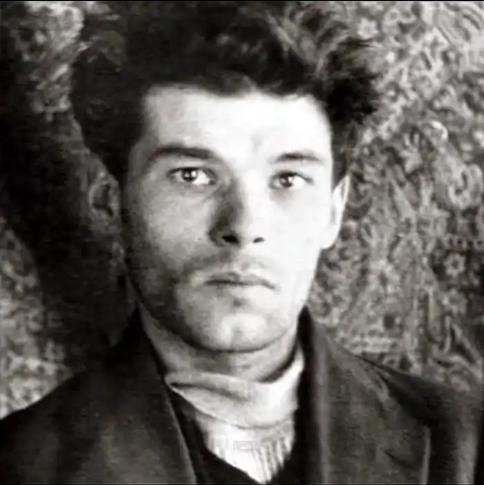
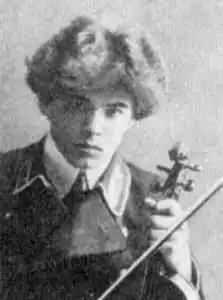
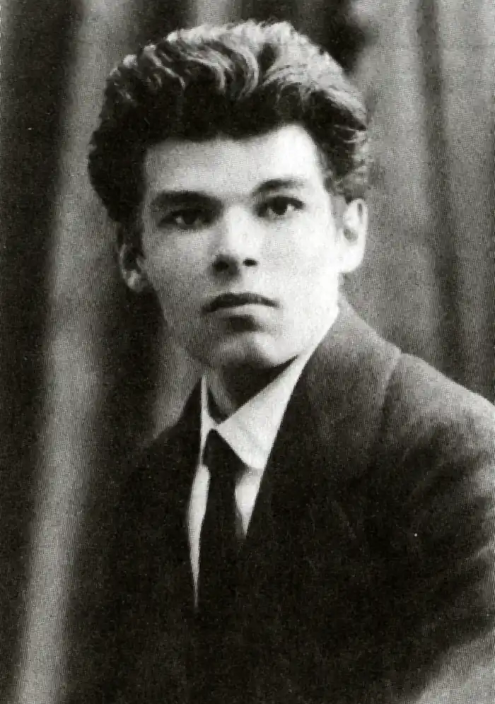

Михайль Семенко (1892-1937)
Представник авангардного мистецтва початку ХХ століття, єдиний, хто виступив і поетом, і теоретиком українського футуризму, Михайль Семенко був трагічною і надзвичайно яскравою постаттю української літератури, невиправдано забутим у часи монополії "соціалістичного реалізму". Михайль Семенко (Михайло Васильович) народився 31 грудня 1892 року в с. Кобинці Миргородського району на Полтавщині. Його мати — Марія Проскурівна — була письменницею і прищепила любов сина до літератури ще в дитинстві.
Початкову освіту Семенко здобув у Хорольській гімназії, а по її закінченню — в Курському реальному училищі. 1911 року він вступає в Петербурзький психоневрологічний інститут. Закінчивши дворічні загальноосвітні курси у відомого педагога А.С. Черняєва, він стає студентом природознавчо-історичного відділення педагогічного факультету. Саме на цей період припадає початок творчого шляху поета. Його поетичним дебютом стала збірка "Prelude" (1913). До неї ввійшли традиційні романсові вірші елегійного типу, милозвучні, сентиментальні, властиві молодим поетам-початківцям. За спостереженням Д. Загула, Семенко "співав таким же соловейком, як і інші". Перебуваючи в Росії, він не міг залишитися осторонь бурхливих подій в російській літературі, нових творчих напрямків — модернізму, символізму, футуризму. Зрештою, відкидає як безперспективний модерністський напрямок і поступово схиляється до авангарду. Його кумирами на той час — російські поети-футуристи. 1914 року М. Семенко опиняється в Києві. Однак з початком Першої світової війни Михайла мобілізовано до царської армії (за іншими даними Семенко хоче виїхати до Америки, але 1914р. затримується у Владивостоці). З 1916 до 1917-го служить телеграфістом у Владивостоці. Там же вступає до підпільної групи РСДРП(б). Повернувшись до Києва наприкінці 1917-го, саме в розпал визвольної боротьби, активно включається в літературний процес, стає одним з ватажків відродження і розвитку національної літератури. Його поезії (друковані ще в "Українській хаті") і збірка "Prelude" імпонували українським "модерністам". Але поет, вважаючи свою першу збірку лише пробою пера, рішуче пориває з молодомузівцями і хатянами. Футуристичний етап творчої еволюції М.Семенка започатковано ще в його маніфестах-передмовах до збірок "Дерзання" та "Кверо-футуризм" (1914). Семенко безповоротно відходить від традицій хаток, вважаючи що оновлення національної лірики пов'язане саме з авангардом. Його пошуковий футуризм вимагає повного заперечення попереднього художнього досвіду, деканонізації будь-якого авторитету в літературі. І це не декларація, це активна дія. Дуже драматично сприймаються його не зовсім етичні випади проти культу Т. Шевченка в українській літературі, проти хуторянського, провінційного мистецтва, загалом проти всього, що базується на традиційному національному ґрунті. Семенка приваблює "краса пошуку", "динамічний лет". Переймаючись долею національного мистецтва і України, він в той же час пише твори дуже далекі, або й взагалі відчужені від національних традицій, за що його часто критикують представники майже всіх літературних течій. З формального боку творчість М.Семенка схиляється в бік формально-графічного вираження, охарактеризованого нині як поезомалярство. І хоча за обсягом період кверо-футуризму не надто об'ємний, але саме з ним пов'язаний великий скандал: "Легше трьом верблюдам з теличкою в 1/8 вушка голки зараз пролізти, ніж футуристові крізь українську літературу до своїх продертись" — іронізував з цього приводу згодом Семенко. Проте футуризм не єдиний напрям творчих зацікавлень поета. Ще у 1915-му він пише цикл "Крапки і плями", започатковуючи ним "другий період" своєї творчості, позначений відчутним впливом імпресіонізму (цикли "Осіння рана", "П'єро кохає"). Це дає поштовх до спроб модернізації традиційної лірики. Вищезгадані цикли написані у формі солдатського щоденника. У поезіях переважає інтелектуальне бачення навколишнього світу, а також досить тонкий психологічний аналіз, орієнтований у чуттєву сферу людських переживань. З-поміж кращих зразків інтимної та медитативної лірики цього періоду — "Кондуктор", "Ніч", "Заплети косу міцніш!". Значний психологізм певною мірою став наслідком студіювання у відомого психолога Бехтєрєва. Творчий доробок цього періоду дуже плідний — збірки "П'єро здається" (1918), "П'єро кохає" (1918), "Дев'ять поем" (1918), "Дві поезофільми" (1919). Варто зазначити, що нахил до імпресіоністичних та символістських мотивів, продиктованих темою кохання, Семенко маскує за П'єро — ліричним героєм, близьким до внутрішніх душевних почувань самого поета. 1 том Повного зібрання М.Семенка має назву "Арії трьох П'єро". Третій "П'єро" — збірка "П'єро мертвопетлює" (1919) — повернення до поетики футуризму, гнівної, епатажної та ексцентричної. Михайль Семенко бере активну участь у суспільному житті літературної України: організовує футуристичний рух в мистецтві, видає "Універсальний журнал" (Київ, 1918, виходить лише 2 номери), журнал "Фламінго", у виданні якого бере участь художник А. Петрицький (1919), "Альманах трьох" (Київ, 1920, за підписами М. Семенка, О. Слісаренка, М. Любченка), одне число "Катафалка искусства" та багато ін. Кожне з цих видань гуртувало довкола себе здібну творчу молодь. Саме в них дебютували пізніше такі відомі письменники, як М. Бажан, Ю. Яновський, Р. Лісовський та багато інших. Представлені в періодичних виданнях та в збірках поезії були досить різнобарвними за жанрово-стильовою тематикою, але тема стихії міста була домінуючою темою Семенка-футуриста. Своєрідність урбаністичної тематики Семенка, яка вирізняє його з-поміж усіх інших футуристів, полягає у введенні до тексту твору науково-технічної термінології, розмовно-побутової лексики, синтаксичних ускладнень, а також у майстерному переході від узагальненого до конкретних образів-елементів міста ("Ліхтар", Тротуар", "Вулиця"). В. Коряк з цього приводу зауважив, що М. Семенко всією творчістю "споруджує в українській поезії культ урбанізму". Паралельно з творчістю М. Семенко й далі розробляє теорію футуризму. Організовує групи "Ударна група поетів-футуристів" (1921), "Аспанфут" (Асоціація панфутуристів, 1921), редагує цілу низку футуристичних одноденок. Заради літератури він навіть жертвує відповідальною партійною посадою, для чого взагалі виходить з партії! 1922 р. він проголошує панфутуристичну теорію, за якою класичне "академічне" мистецтво, досягнувши вершини розвитку, починає агонізувати. А тому, каже Семенко, не треба чекати, поки воно відімре, треба деструктувати його, аби з уламків сконструювати нове — метамистецтво (надмистецтво). 1924 року виходить ще одна збірка — "Кобзар", в якій були зібрані твори поета 1910-1922 рр. У протиставленні Шевченковому "Кобзареві" — намагання показати суть різниці між літературами ХІХ і XX ст. Нові книги М.Семенка мають назви "Степ" (1927), "Маруся Богуславка" (1927), "Малий Кобзар і нові вірші" (1928) — поет і далі вперто дратує колег-опонентів по творчій ниві, знову і знову презентуючи свої супре-, футуро— і кубо-поези, хоча поруч з ними знаходимо й традиційні віршові форми ("Оксанія", "Туга", "Атлантида" тощо). Кінець двадцятих років. Комуністична машина все більше й більше тисне на творчу свободу поета, примушуючи виконувати замовлення на соціальну тематику. Як і В. Маяковський, М. Семенко змушений вдатися до створення функціональної поезії (збірник "З радянського щоденника"), що по суті є схематичним переказом газетного тексту, віршованими лозунгами та агітками: "Писать про активність я мушу, забувши про людську душу" (Семенко М. З радянського щоденника. К., 1932, С. 86). У цей час футуризм як літературний напрямок зникає. Він вичерпав себе як система ідейно-естетичних настанов, а цікаві елементи його поетики були відкинуті задекларованими пролетарською літературою естетичними принципами, як шкідливі та антирадянські. Примушений ідеолого-політичною системою "зректися" футуризму, М.Семенко поступово відходить від літературного процесу. Аби якось засвідчити свою приналежність до поетів, він ще пише принизливий вірш "Починаю рядовим", який був сприйнятий критикою як свідоцтво остаточного краху футуризму, що і засвідчив сам лідер цього напрямку. Частково вихід із скрутного становища М. Семенко знаходить у звертанні до жанру памфлету та віршів гострого соціального звучання, що імпонувало його гострослів'ю й дотепності. 1930 року виходить збірник памфлетів та віршів М.Семенка "Європа і ми", в якій іронія автора межує з сарказмом. Збірка публіцистичних віршів "Міжнародні діла" (1933) за ідейно-тематичним наповненням вже нічим не відрізняється від літератури колег: "як усі" М.Семенко прославляє СРСР та викриває націоналістичний світ. Єдиним твором, що заслуговує на більш пильну увагу є поема "Німеччина" (1936), у якій автор у гостро сатиричній формі піднімає проблему загрози фашизму. Ідейні та художні цінності поеми свого часу відзначив Ю. Смолич: "Таку річ, на такій висоті поетичного слова і образу, міг дати письменник високої загальної культури, широкої ерудиції і багатого життєвого досвіду". 23 квітня 1937 року у Києві відбувся творчий вечір М. Семенка. А через три дні його заарештували. В зв'язку з тим, що поет мешкав у Харкові, а до Києва часто навідувався, було навіть підготовлено два ордери на його арешт. Семенка звинуватили в "активній контрреволюційній діяльності", і, надломлений морально і фізично письменник, як свідчать протоколи допитів від 4, 7, 8 травня 1937 року, "зізнається" в усіх пред'явлених обвинуваченнях: спроба скинути Радянську владу в Україні за допомогою німецьких фашистів та ін. Зізнання він написав під диктовку уповноваженого Акімова на ім'я Начальника НКВД УРСР Леплевського 4 вересня 1937 року. 23 жовтня 1937 року було винесено вирок — розстріл. Того самого дня вирок було виконано. Твори: Поезії (К., 1985).